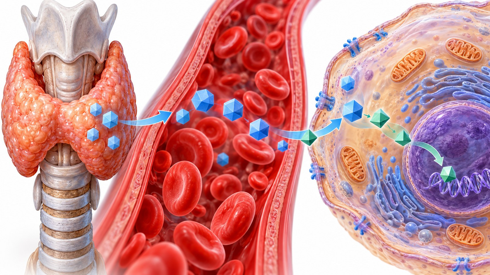

CLINICAL LEARNING · 아산 28회
TSH는 정상인데
증상이 남을 때
T4/T3 병용 전 평가 · 제한적 시도 · 중단 기준
TSH · free T4 · free T3가 반영하는 대상을 구분한다

정상 TSH에 도달한 뒤에도 증상을 호소하는 일부 환자
갑상선 외 피로·불편을 유발하는 질환부터 평가한다
순응도 · 공복 복용 · 흡수 방해 요인
단독요법 최적화에 필요한 강의의 구체적 조건
TSH의 평형 도달과 안정기 추적 · 강의의 모니터링 시간표
호르몬제에 기대하는 효과를 구체적으로 확인한다
강의에서 소개한 유럽갑상선학회 2012 지침의 위치
임신 · 임신 계획 · 심혈관질환 · 고령
생리적 비율 13–20:1과 T3가 많은 고정 비율을 구별한다
보편적 시작 처방표가 아닌 병용 비율을 설명한 예시
짧은 T3 반감기와 혈중 peak를 고려한다
유지와 중단을 시작 전부터 구분한다
Q&A 모음집 81–82·85쪽
T4/T3 병용 전 평가 · 제한적 시도 · 중단 기준